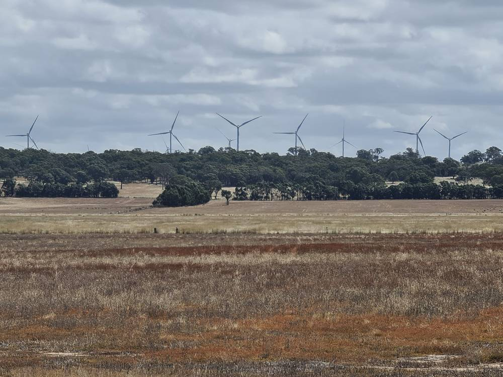

호주 농촌 마을 3곳 연구, 재생에너지엔 찬성하나 협의·이익공유는 불공평하다는 인식

청정에너지협의회 집계 141개 사업 325억 호주달러 진행 중…빅토리아주는 6월 12일 주민 참여 지침 발표
호주 뉴사우스웨일스주 농촌 마을 3곳의 주민들이 재생에너지 전환에는 대체로 찬성하지만 결정 과정에서 밀려났다고 느낀다는 연구 결과가 나왔다. 호주공공정책연구소는 이 마을들에서 이해관계자 워크숍과 면담을 열었다. 연구는 협의가 일관되지 않고 부족했으며 원주민을 포함한 주민이 계획에 영향을 미칠 기회도 제한적이었다고 짚었다. 이익공유와 보상은 불공평하고 대상이 불분명하며 오래 남는 가치가 없다는 평가를 받았고, 업계·정부·계획 제도에 대한 신뢰도 약했다.
주민들이 낸 요구는 네 가지다. 모든 대형 에너지 사업에 강제력 있는 최소 협의 기준을 두고, 주민과 함께 만든 이익공유 틀을 계획 규정에 넣으라는 것이다. 협상을 돕는 지원을 늘리고, 모든 정부 단계에서 지역 특성에 맞춘 계획과 운영을 하라는 요구도 있다. 연구에 참여한 사이먼 라이트(Simon Wright) 찰스스터트대 선임연구원은 11월 12일 더컨버세이션에 쓴 글에서 이 내용을 소개했다.
호주 청정에너지협의회는 10월 26일 낸 상반기 보고서에서 자금 조달을 마쳤거나 공사 중인 재생에너지·저장 사업이 141개, 약 325억 호주달러라고 밝혔다. (현재 진행 중인 전체 규모이며, 올해 상반기에 자금 조달을 마친 발전 사업은 12개, 2.6 GW다.) 라이트에 따르면 빅토리아주 북서부에서는 송전 사업 'VNI 웨스트'에 농민 반대가 이어지고, 주 정부는 주민 반발로 두키 일대 재생에너지구역 계획을 접었다. 주 정부가 6월 12일 발표한 주민 참여 지침은 계통 접속을 신청하는 모든 사업에 이른 협의, 의견 반영 공개, 지역 투자와 혜택, 민원 처리 절차를 요구한다.
출처: The Conversation 2026-11-12 Simon Wright 원문 보기
출처: 호주 청정에너지협의회(Clean Energy Council) 2026-10-26 2026년 상반기 대규모 재생에너지·저장 투자 보고서 원문 보기
출처: 빅토리아주 총리실 2026-06-12 지역사회 참여·사회적 가치 지침 발표 자료 원문 보기
豪農村3町の研究、再エネには賛成でも協議と利益共有は不公平との認識
クリーンエネルギー評議会の集計で141事業・325億豪ドルが進行中…ビクトリア州は6月12日に住民参加指針を発表
オーストラリアのニューサウスウェールズ州の農村3町の住民は、再生可能エネルギーへの転換には概ね賛成だが、意思決定から外されていると感じているとの研究結果が出た。オーストラリア公共政策研究所は、これらの町でステークホルダーのワークショップと聞き取りを行った。研究は、協議が一貫せず不十分で、先住民を含む住民が計画に影響を及ぼす機会も限られていたと指摘した。利益共有と補償は不公平で、対象が不明確で、長く残る価値がないと受け止められ、業界・政府・計画制度への信頼も弱かった。
住民が出した要求は四つある。すべての大型エネルギー事業に、強制力のある最低限の協議基準を設けること、住民と共に作った利益共有の枠組みを計画規定に盛り込むことだ。交渉を支える支援を増やすこと、すべての政府レベルで地域の特性に合わせた計画と運営を行うことも求めた。研究に参加したチャールズ・スタート大学のサイモン・ライト（Simon Wright）上級研究員は、11月12日にザ・カンバセーションへ寄せた文章でこの内容を紹介した。
オーストラリアのクリーンエネルギー評議会は10月26日に出した上半期報告書で、資金調達を終えたか工事中の再エネ・蓄電事業が141件、約325億豪ドルに上ると明らかにした。（現在進行中の事業全体の規模で、今年上半期に資金調達を終えた発電事業は12件、2.6 GWである。）ライトによると、ビクトリア州北西部では送電事業「VNIウエスト」に農民の反対が続き、州政府は住民の反発で、ドゥーキー一帯の再エネゾーン計画を取り下げた。州政府が6月12日に発表した住民参加指針は、系統接続を申請するすべての事業に、早期の協議、意見の反映の公開、地域への投資と便益、苦情の処理手続きを求めている。
出典: The Conversation 2026-11-12 Simon Wright 原文を読む
出典: 호주 청정에너지협의회(Clean Energy Council) 2026-10-26 2026년 상반기 대규모 재생에너지·저장 투자 보고서 原文を読む
出典: 빅토리아주 총리실 2026-06-12 지역사회 참여·사회적 가치 지침 발표 자료 原文を読む
澳大利亚农村3个小镇研究：支持可再生能源，却认为协商与利益共享不公平
清洁能源委员会统计141个项目、325亿澳元在推进…维多利亚州6月12日发布居民参与指南
一项研究显示，澳大利亚新南威尔士州3个农村小镇的居民总体上支持能源转型，但觉得自己被排除在决策之外。澳大利亚公共政策研究所在这些小镇举办了利益相关方工作坊并进行访谈。研究指出，协商前后不一致且不充分，包括原住民在内的居民对规划施加影响的机会也有限。居民认为利益共享和补偿不公平、对象不明确、缺乏长期价值，对产业、政府和规划制度的信任也很脆弱。
居民提出了四项要求。一是为所有大型能源项目设立有约束力的最低协商标准。二是把与居民共同制定的利益共享框架写入规划规定。三是增加帮助居民谈判的支持。四是在各级政府层面采取契合当地特点的规划与运作方式。参与该研究的查尔斯·斯图特大学高级研究员Simon Wright于11月12日在The Conversation撰文介绍了这些内容。
澳大利亚清洁能源委员会在10月26日发布的上半年报告中表示，已完成融资或正在施工的可再生能源和储能项目有141个，约325亿澳元。（这是目前在推进的项目总规模，今年上半年完成融资的发电项目为12个，共2.6 GW。）据Wright介绍，维多利亚州西北部的农民持续反对输电项目“VNI West”，州政府因居民反对放弃了杜基一带的可再生能源区计划。州政府6月12日发布的居民参与指南，要求所有申请接入电网的项目做到：尽早协商、公开意见的采纳情况、投资地方并带来惠益，并设立投诉处理程序。
来源: The Conversation 2026-11-12 Simon Wright 查看原文
来源: 호주 청정에너지협의회(Clean Energy Council) 2026-10-26 2026년 상반기 대규모 재생에너지·저장 투자 보고서 查看原文
来源: 빅토리아주 총리실 2026-06-12 지역사회 참여·사회적 가치 지침 발표 자료 查看原文
Study of three rural Australian towns: backing renewables, but seeing consultation and benefit sharing as unfair
Clean Energy Council counts 141 projects worth A$32.5 billion in progress; Victoria issued community engagement guidelines on June 12
Residents of three rural towns in New South Wales broadly support the shift to renewable energy but feel pushed out of the decisions, according to a new study. The Australian Public Policy Institute held stakeholder workshops and interviews in the towns. It found that consultation was inconsistent and inadequate, and that residents, including First Nations people, had limited chances to influence planning. Benefit sharing and compensation were seen as unfair, poorly targeted and lacking lasting value, and trust in industry, government and the planning system was fragile.
Residents made four requests. They want minimum, enforceable consultation standards for every major energy project, and a benefit-sharing framework built with residents and written into planning rules. They also want more support to help them negotiate, and planning and governance suited to local conditions at every level of government. Simon Wright, a senior research fellow at Charles Sturt University who took part in the study, described these findings on November 12 in an article for The Conversation.
In its first-half report released on October 26, the Australian Clean Energy Council said 141 renewable generation and storage projects worth about A$32.5 billion are financed or under construction. (That is the total now in progress; the generation projects that reached financial close in the first half of this year number 12, at 2.6 GW.) According to Wright, farmers in north-west Victoria continue to oppose the VNI West transmission project, and the state government dropped a planned renewable energy zone around Dookie after local backlash. The state's engagement guidelines, issued on June 12, require every project applying for grid access to consult early, show how feedback was reflected, invest locally and share benefits, and set up a complaint process.
Source: The Conversation 2026-11-12 Simon Wright Read the original
Source: 호주 청정에너지협의회(Clean Energy Council) 2026-10-26 2026년 상반기 대규모 재생에너지·저장 투자 보고서 Read the original
Source: 빅토리아주 총리실 2026-06-12 지역사회 참여·사회적 가치 지침 발표 자료 Read the original